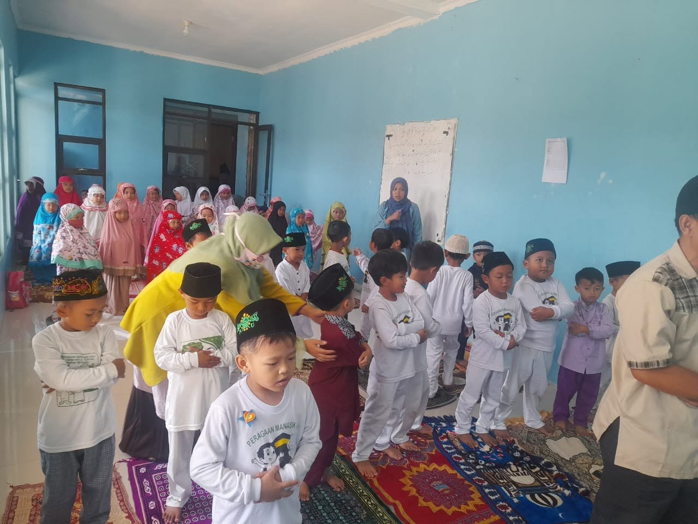
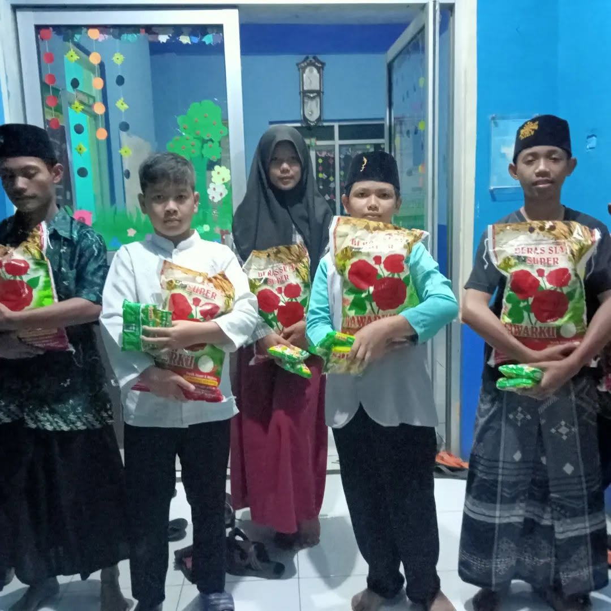

Kumpulan rekam jejak aktivitas belajar, pembinaan, dan torehan prestasi santri Yayasan Mutiara Ilmu.
Semua foto dokumentasi dilengkapi tanda pengenal (*watermark*) resmi lembaga.
 Unit DTA
Unit DTA
Santri DTA mempraktikkan makharijul huruf dan menghafal surat pilihan di bawah bimbingan Ustadz Ridwan.
 Unit RA
Unit RA
Pendidikan fitrah anak usia dini melalui cerita sirah nabawiyah dan hafalan doa harian.
 Majelis Ta'lim
Majelis Ta'lim
Silaturahmi jamaah dan pembekalan fiqih muamalah rumah tangga bersama Ustadz Luqman Hakim, Lc.

Unit RAMelatih motorik halus dan mengenalkan keindahan aksara Al-Qur'an sejak usia dini.
 Unit DTA
Unit DTA
Persiapan kelulusan santri tingkat akhir madrasah diniyah untuk memperoleh ijazah resmi Kemenag.

Majelis Ta'limPenyaluran amanah infaq dan shodaqoh para donatur kepada keluarga binaan di sekitar yayasan.
Bukti nyata dedikasi asatidz dan ketekunan para santri Mutiara Ilmu dalam mengukir prestasi di tingkat kota maupun provinsi.
Diraih oleh: Ahmad Zaki Al-Faruq (Santri DTA)
Penyelenggara: Forum Komunikasi Diniyah Takmiliyah (FKDT)
Diraih oleh: Fathimah Az-Zahra (Santri RA)
Penyelenggara: Ikatan Guru Raudhatul Athfal (IGRA)
Diraih oleh: Muhammad Raihan (Santri DTA)
Penyelenggara: Pekan Keterampilan & Seni Pendidikan Islam